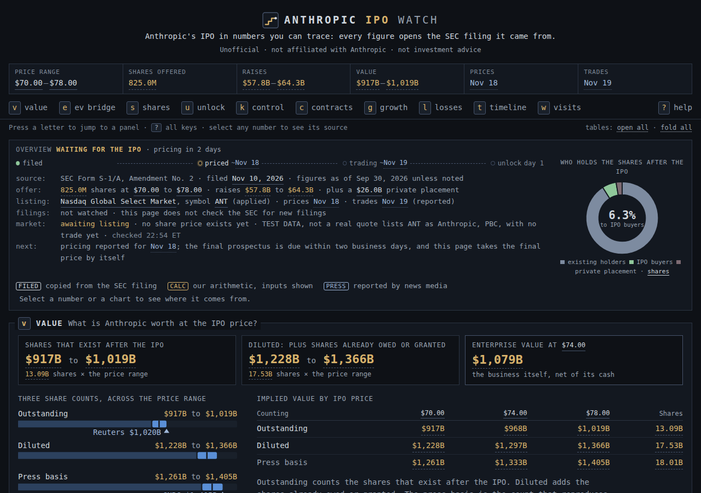
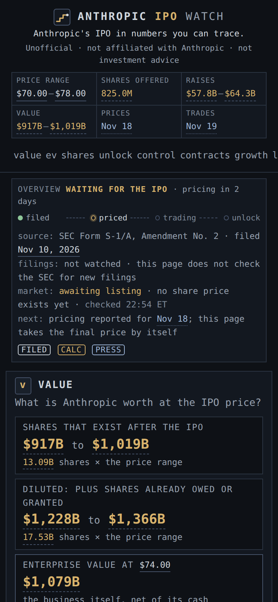
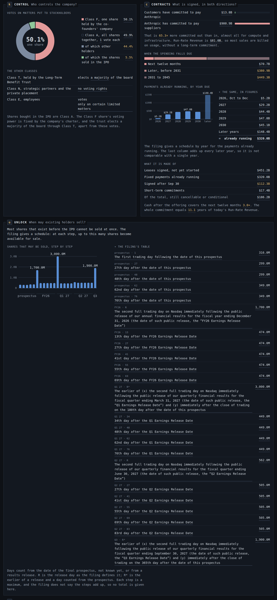
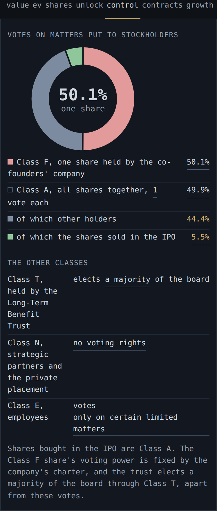

Loop 007 — One name, a centered hero, rings
2026-11-17 · The page becomes one product under one name, Anthropic IPO Watch: a light centered hero, a line that teaches the keys, open or fold every table, UNLOCK across the width, and two rings where figures are parts of one whole. Colors, fonts and mechanics unchanged. Version 0.7.0.
Why
I'd like to work on the layout a little: a light hero at the top, really clean, centered, with Anthropic IPO Watch. A small line underneath to explain that you can press a letter to jump to the right place, and a small menu to fold or open everything. UNLOCK is very long beside CONTROL; it could be wider. The page still says ANT IPO Monitor: one pass to consolidate all that into a finished, uniform product. In the overview, not a bar chart, a pie chart! CONTROL would be a good candidate. Don't change things too fast: show me first.
The owner's words, gathered from several messages and reworded in English.
What changed




- The name: header, tab, app title, the client name sent to the SEC, README and docs. VISION.md is the owner's and still says the old name.
- Rings: a new drawing in
charts.py; each slice is a mark that opens its source, with a 2-unit gap between slices and a sourced value in the centre. A new calculation gives the votes of Class A shares outside the IPO (49.9 − 5.5 = 44.4%), checked by hand. - Phones: the keys line, open/fold all and the overview ring are hidden, so the first screen still shows the value at the IPO price.
Checks
| Check | Result | Evidence |
|---|---|---|
| Unit tests, lint, types, secret scan | passed | 130 unit tests, including the ring drawing and the new calculation. |
| Real-browser tests, local | passed | 14, including the first-screen test at phone width and no sideways scroll at 360, 390 and 430 px. |
| The owner saw the screenshots before the release | passed | Four screenshots sent; the owner answered "yes". |
| CI, deployment and real-browser tests against antipo.watch | see report | loops/007-report.json. |
Left
- A small empty space under CONTROL beside the taller CONTRACTS panel on a desktop.